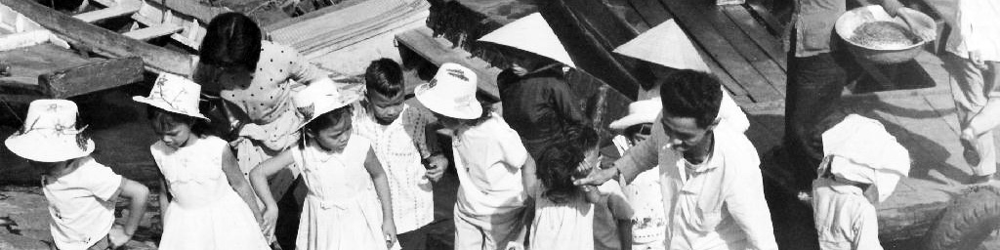

|
 |
Saigon (Now Ho Chi Minh City), Vietnam Pictures |
|
| As I mentioned on my main Vietnam web page, during my first few months in Vietnam, I didn't
venture off base much, since I knew I had many months ahead of me to check out Saigon. But after
the Tet offensive in January, 1968, downtown was put off limits to us, so I never made it down
there after that (bummer!), and hence, didn't get many pictures of that bustling city. Here are
the very few I do have, most black and white, that I developed and printed myself in our on-base
photo lab (hence the not so great quality!) and, at the end, some color pictures from digitized
35mm slides.
|
|
|
|
|